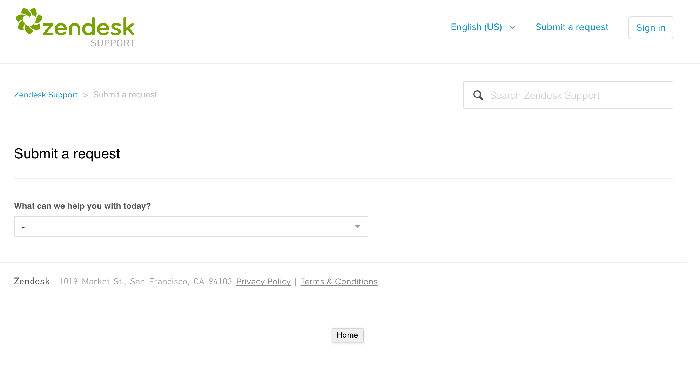

Dit project is voor Nerds & Company zelf gemaakt. Het was de bedoeling dat de support pagina waar klanten met hun vragen terecht kunnen werd geredesigned en gebouwd. Zendesk heeft zelf al support pagina’s die er zo uitzien:  Dit is een beetje hoe de pagina in elkaar zit. Rechts boven in is het mogelijk om in te loggen als klant of om vragen te stellen. Aan de linkerkant is er ruimte voor je logo, de rest van de pagina vrij voor invulling. Doorgaans staan hier zoals afgebeeld veelgestelde vragen of iets dergelijks.
Het was de bedoeling dat de support pagina van Nerds & Company gemakkelijk te gebruiken werd voor de klant en een nieuw ontwerp kreeg. Toen der tijd was de support pagina niet in een lijn met de huidige website https://nerds.company. Hier moest dus verandering in komen. De eisen aan de support pagina waren als volgt: - De gebruiker moet gemakkelijk kunnen inloggen - De huisstijl moet overeen komen met de huidige website. - Drie pijlers voor snelle interactie
wireframe 1:
wireframe 2:
Ontwerp 1:
Ontwerp 2:
Werk een idee uit tot een presentatie voor de klant Het ontwerp dat zich hieronder bevindt is het definitieve ontwerp dat zal worden voorgelegd aan Nerds & Company. Ik heb gekozen voor dit ontwerp omdat tijdens overleg samen met de ontwerpers dit als beste naarvoren kwam. Dit ontwerp visualiseert de huisstijl zoals die op de huidige website is, de pagina is zo overzichtelijk en het is erg gebruiksvriendelijk doordat er niet teveel afleiding in de pagina zit.
Hoe zou ik de ideeën aan de klant presenteren? Als eerste zou ik de denkstappen laten zien doormiddel van de wireframes te vergelijken met de definitieve ontwerpen. Hierdoor is het mogelijk om met behulp van wat uitleg de klant een indruk te geven waarom bepaalde keuzes zijn gemaakt. Doordat je een klant meeneemt in je eigen denk proces kan je goed communiceren over de bepaalde keuzes die zijn gemaakt en vooral waarom deze zijn gemaakt. Uiteindelijk vertel ik waarom ik voor dit ontwerp heb gekozen met alle voordelen ten opzichte van het andere ontwerp. In dit geval is het belangrijk om aan te tonen dat je wilt dat klanten met vragen snel en eenvoudig zijn of haar vraag kunnen stellen. In het gekozen ontwerp zitten geen elementen die erg de aandacht trekken, dit zorgt ervoor dat ze sneller door zullen klikken op de pagina en hun vraag zullen stellen. Dit resulteert ook weer in het sneller te hulp kunnen schieten van klanten. Beschrijf bij minimaal twee ideeën je commentaar. Hieronder zal ik uitleg geven over de keuzes die zijn gemaakt bij het maken van de definitieve ontwerpen. Definitief ontwerp 1 In dit ontwerp is het doel duidelijk: De klant met een vraag zo snel mogelijk persoonlijk te hulp schieten. Doormiddel van de verschillende mogelijkheden van communicatie is het mogelijk voor de klant om hoe dan ook een antwoord of reactie te krijgen op zijn of haar vraag/probleem. Mede door het minimalistische design in combinatie met de focus op conversie zorgt ervoor dat dit een goede benadering is wanneer je graag persoonlijk je klant te woord wilt staan. De huisstijl van de website is hier doorgevoerd, dit is te herkennen aan de call-to-action buttons met de pijltjes die naar rechts wijzen. Verder is het logo in blokvorm een herkenningspunt, op de website van Nerds & Company is dit ook een zichtbaar element. Definitief ontwerp 2 Bij het tweede ontwerp is de focus wat meer verdeeld tussen persoonlijk en onpersoonlijke hulp. In dit ontwerp is het gemakkelijk om veel voorkomende vragen direct te beantwoorden. Echter is dit wel een onpersoonlijkere aanpak dan wanneer je ervoor wilt zorgen dat mensen juist vragen stellen via een email, ticket of belletje. Aan de positieve kant kun je zo eenvoudige problemen gauw oplossen zonder dat je moeite hoeft te stoppen in het continue op weg helpen van klanten met dezelfde vraag. In dit ontwerp komen de afbeeldingen met illustraties wat meer naar voren, hierdoor ontstaat er een mooi contrast. Helaas is contrast niet altijd goed wanneer je gericht bent op het afhandelen van klachten. In dit ontwerp is de kans groot dat mensen even rondkijken en dan weer weg klikken omdat ze het wel weer gezien heben. Wel zijn de drie afbeeldingen in het midden van de pagina een goed herkenningspunt, dit kan ervoor zorgen dat wanneer je ergens mee zit maar niet goed waar je terecht moet, je er wel achter komt.
Voordat ik begon aan het project moest ik mij verdiepen in het beheersysteem achter het support programma. Dit beheersysteem genaamd zendesk is een online platform waar klanten hun vragen kunnen stellen en het bedrijf de geschiedenis met de klant kan terug zien. Tijdens het onderzoeken kwam ik erachter dat er een aantal restricties waren waarmee ik rekening moest houden tijdens het ontwerpen en bouwen. Zo staan de headers en footers vast qua positie en kan er geen gebruik worden gemaakt van de Front-end repo of SCSS op zichzelf. Hierdoor was het noodzakelijk om gebruik te maken van standaard CSS en in het ontwerp rekening te houden met de standaard structuur van de website. Naast dit kwam ik erachter dat er rekening moest worden gehouden tijdens het bouwen met de meerdere lagen van het platform. Zo is het dat wanneer je inlogt, je op een vervolg scherm komt met een aantal dezelfde elementen. Deze zullen ook worden aangepast wanneer je op de home pagina een element aanpast. Nu ik de onderdelen duidelijk had waarmee ik rekening moest houden, was het makkelijker om te beginnen met het bouwen van de website.
De website is te vinden op de volgende locatie: support.nerds.company Kwaliteitscontrole Om te controleren of alles goed is gegaan tijdens het bouwen van deze pagina heb ik samen met mijn stagebegeleider de code nagekeken of het klopt en of alles goed is opgebouwd. Nadat het ontwerp was gerealiseerd heb ik de website nog laten zien aan studio of alles klopte qua vormgeving, fonts en kleuren. Pas toen bij studio alles akkoord was ging de website online gegaan. Door de meerdere controles weet ik zeker dat de website voldoet aan de kwaliteit van het bedrijf. Arbo- en milieu eisen Tijdens het werken aan deze website heb ik te maken gekregen met de volgende arbo-eisen: - Een goede werkplek ( verstelbaar bureau, verstelbare stoel ) - Een veilige werkomgeving ( snoeren weggewerkt ) Het bedrijf voldoet aan beide eisen. Hoe heb ik samengewerkt? Ik heb het project voornamelijk zelfstandig opgepakt. Alleen tijdens het ontwerpen heb ik samengewerkt met studio om de huisstijl goed te krijgen. Verder heb ik af en toe met mijn stagebegeleider gezeten voor enkele input of controle. Presentatiefase Doormiddel van het testen van de website door meerdere collega’s is er voor gezorgd dat de bugs eruit zijn en de website wordt opgeleverd naar verwachting. Presentatie naar de klant Voor de mensen die bij Operationele Services werken is er een korte uitleg geweest over de verandering van het uiterlijk op de support pagina. De reden dat het specifiek voor OS was komt doordat zij er het meeste mee werken. Service Omdat het een intern project was heb ik niet te maken gehad met extra services die moesten worden geleverd als documentatie. Wel was het mogelijk om nog feedback te geven op het product zodat dit kon worden verwerkt.
Doordat ik mij goed had voorbereid door middel van het onderzoek was het een stuk sneller werken. Dit resulteerde in een snel resultaat waarbij de website vrij snel goed werd gekeurd door de ontwerpers. Enkel een paar puntjes op de ï betreft ruimte tussen letters en zinnen etc. Het proces verliep erg goed en de samenwerking tussen mij en de ontwerpers verliep ook goed. Er was een goede communicatie en er werd snel geschakeld wanneer het nodig was. Het eindresultaat ben ik erg over te spreken, de website ziet er goed uit en het lijkt precies op het ontwerp. Productieproces Het was een leuke opdracht om aan te werken en de samenwerking met studio en mijn stagebegeleider ging goed. Het proces ging redelijk snel doordat iedereen tijd wilde vrijmaken om even mee te kijken. Operationele Services was ook tevreden over de verbetering van het uiterlijk, het is een hele verbetering ten opzichte van de oude pagina.